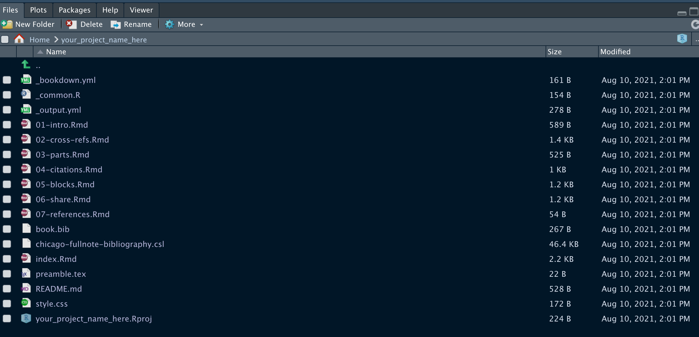
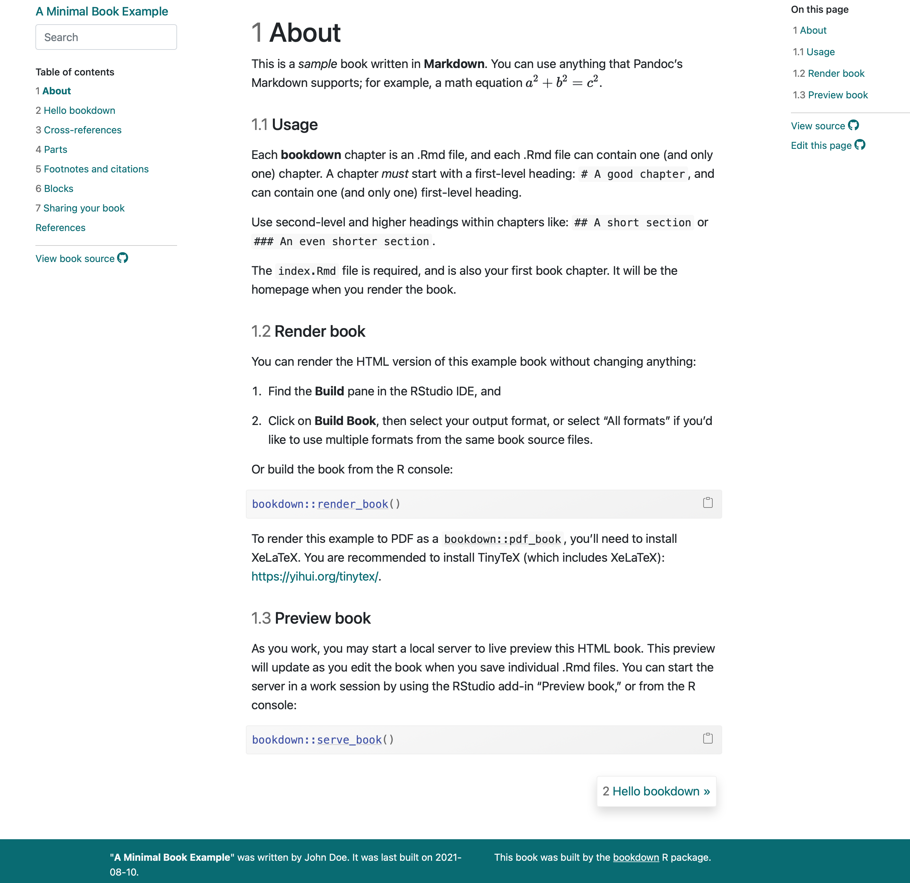

Code
remotes::install_github('rstudio/bookdown')bs4 themebs4 theme
Max Rohde
August 10, 2021
I’m leaving this post up for anyone using bookdown, but I recommend using Quarto instead for future projects.
If you’ve been learning R through the amazing free resources made available by the R community, then you probably seen examples of the bs4 bookdown theme in a few of these various sources:
I think the bs4 theme looks better, and is easier to navigate, than the older gitbook theme (example here).
This is a quick guide on how to get started. For comprehensive details, look at the official guide by Yihui Xie, the author of bookdown.
To follow this tutorial, you need to have the development version of bookdown installed. You can install it with
remotes::install_github('rstudio/bookdown')It will also be helpful to work in RStudio, although it is not strictly necessary.
We will create an example project using the bs4 theme, using a template provided by the developers. Then we can edit this template project to make our bookdown book. To create an example project, enter the following command into the R console within RStudio:
bookdown::create_bs4_book("your_project_name_here")This will create the project in your current directory.
Now, click on the .Rproj file within the project directory to open the project in RStudio. You will see the files of the example like this:

You can then edit the files according to your needs. The first file to start editing is index.rmd, which contains the metadata of the book such as the title, author, date and more. It also contains the content that will go on the landing page for the HTML rendering of the book.
Next you will want to edit files for each chapter, and delete those you don’t need.
Lastly, to fiddle with the theme, you can edit the style.css file if you have some experience with CSS.
To render the book, use
bookdown::render_book()Then to view the preview of the HTML page, use
bookdown::serve_book()
To host my bookdown books online, I put the project into a GitHub repository, and then use Netlify to host it for free. However, this is out of the scope of this tutorial. The official guide by Yihui Xie has more details on the hosting process.
---
title: Creating a bookdown book with the `bs4` theme
description: A short guide to creating a bookdown book using the `bs4` theme
author: Max Rohde
date: 08/10/2021
image: preview.png
code-fold: show
---
:::{.callout-warning collapse="false"}
## Use Quarto instead
I'm leaving this post up for anyone using `bookdown`, but I recommend using Quarto instead for future projects.
:::
## What is the bs4 theme?
If you've been learning R through the amazing free resources made available by the R community, then you probably seen examples of the `bs4` bookdown theme in a few of these various sources:
- R for Data Science: [https://r4ds.had.co.nz](https://r4ds.had.co.nz)
- The ggplot2 book: [https://ggplot2-book.org](https://ggplot2-book.org)
- Mastering Shiny: [https://mastering-shiny.org](https://mastering-shiny.org)
I think the `bs4` theme looks better, and is easier to navigate, than the older `gitbook` theme (example [here](https://moderndive.com)).
This is a quick guide on how to get started. For comprehensive details, look at the [official guide](https://bookdown.org/yihui/bookdown/) by Yihui Xie, the author of `bookdown`.
## How do you use the bs4 theme?
To follow this tutorial, you need to have the **development** version of `bookdown` installed. You can install it with
```{r}
#| eval: false
remotes::install_github('rstudio/bookdown')
```
It will also be helpful to work in RStudio, although it is not strictly necessary.
We will create an example project using the `bs4` theme, using a template provided by the developers. Then we can edit this template project to make our `bookdown` book. To create an example project, enter the following command into the R console within RStudio:
```{r}
#| eval: false
bookdown::create_bs4_book("your_project_name_here")
```
This will create the project in your current directory.
Now, click on the `.Rproj` file within the project directory to open the project in RStudio. You will see the files of the example like this:

You can then edit the files according to your needs. The first file to start editing is `index.rmd`, which contains the metadata of the book such as the title, author, date and more. It also contains the content that will go on the landing page for the HTML rendering of the book.
Next you will want to edit files for each chapter, and delete those you don't need.
Lastly, to fiddle with the theme, you can edit the `style.css` file if you have some experience with CSS.
To render the book, use
```{r}
#| eval: false
bookdown::render_book()
```
Then to view the preview of the HTML page, use
```{r}
#| eval: false
bookdown::serve_book()
```

To host my `bookdown` books online, I put the project into a GitHub repository, and then use [Netlify](https://www.netlify.com) to host it for free. However, this is out of the scope of this tutorial. The [official guide](https://bookdown.org/yihui/bookdown/) by Yihui Xie has more details on the hosting process.